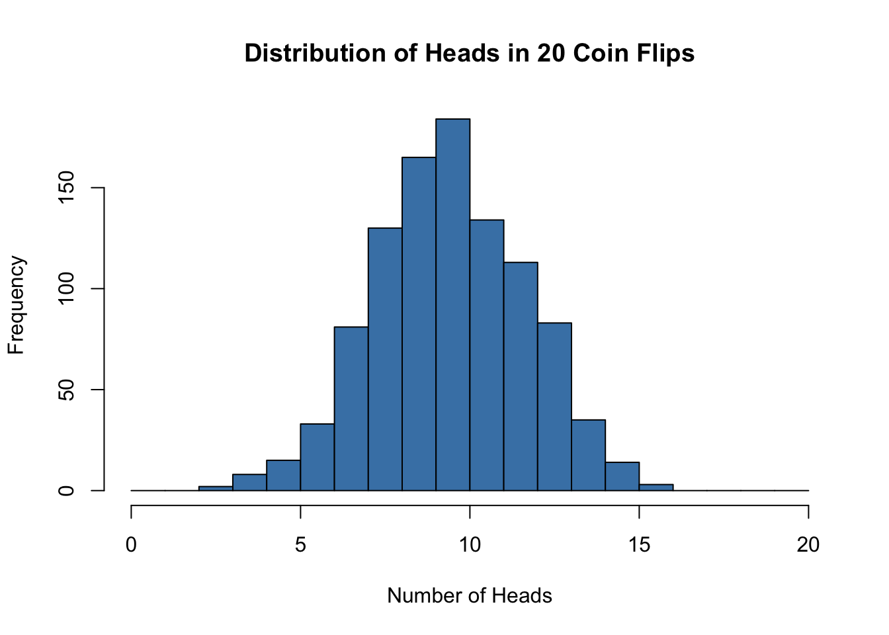
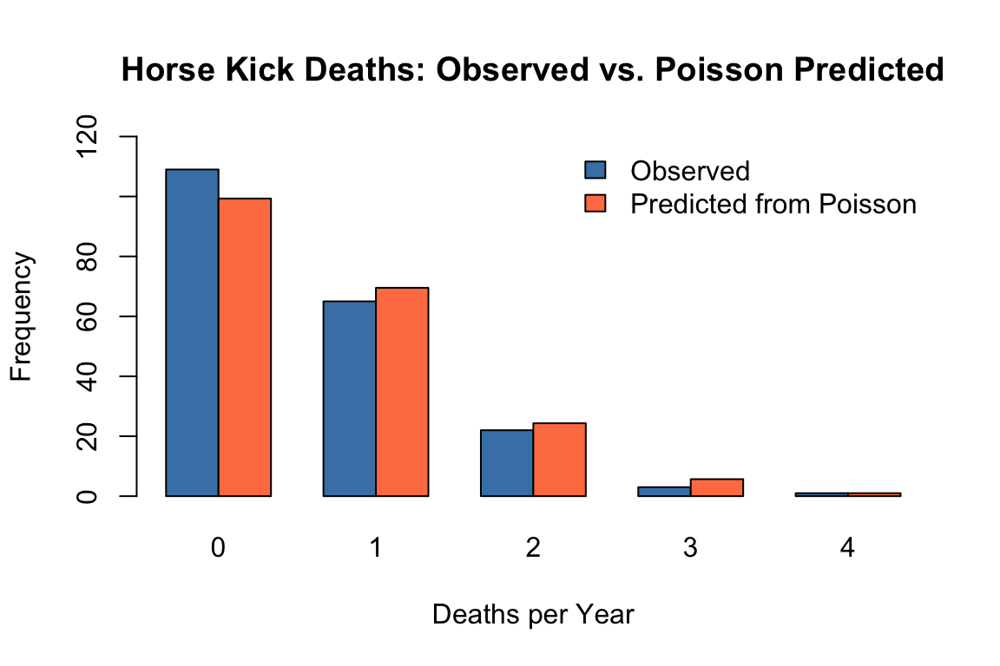

Discrete probability distributions describe random variables that take on distinct, countable values. The number of heads in ten coin flips, the count of bacterial colonies on a plate, and the number of defective items in a batch are all discrete random variables. Understanding these distributions allows you to model count data, calculate probabilities of specific outcomes, and perform statistical tests.
12.2 The Binomial Distribution
The binomial distribution arises when you perform a fixed number of independent trials, each with the same probability of success. It answers questions like: If I flip a coin 20 times, what is the probability of getting exactly 12 heads?
The probability of observing exactly \(k\) successes in \(n\) trials, when each trial has success probability \(p\), is:
\[P(X = k) = \binom{n}{k} p^k (1-p)^{n-k}\]
The binomial coefficient \(\binom{n}{k}\) counts the number of ways to arrange \(k\) successes among \(n\) trials.
The mean of a binomial distribution is \(\mu = np\) and the variance is \(\sigma^2 = np(1-p)\).
Code
# Simulate 1000 experiments of 20 coin flips eachset.seed(42)heads <-rbinom(n =1000, size =20, prob =0.5)hist(heads, breaks =0:20, col ="steelblue",main ="Distribution of Heads in 20 Coin Flips",xlab ="Number of Heads")

Figure 12.1: Distribution of heads from 1000 simulated experiments of 20 fair coin flips
With a fair coin (\(p = 0.5\)) and 20 flips, we expect about 10 heads on average. The distribution is symmetric and centered at 10.
In R, functions for the binomial distribution include:
dbinom(k, n, p) - probability of exactly k successes
pbinom(k, n, p) - probability of k or fewer successes (cumulative)
qbinom(q, n, p) - quantile function (inverse of cumulative)
rbinom(n, size, p) - generate random samples
Code
# Probability of exactly 10 heads in 20 flipsdbinom(10, size =20, prob =0.5)
[1] 0.1761971
Code
# Probability of 10 or fewer headspbinom(10, size =20, prob =0.5)
[1] 0.5880985
12.3 The Poisson Distribution
The Poisson distribution models the number of events occurring in a fixed interval of time or space, when events occur independently at a constant average rate. It is appropriate for count data like the number of mutations in a DNA sequence, phone calls received per hour, or organisms per quadrat in an ecological survey.
The probability of observing exactly \(r\) events when the average rate is \(\lambda\) is:
\[P(Y = r) = \frac{e^{-\lambda} \lambda^r}{r!}\]
A remarkable property of the Poisson distribution is that the mean and variance are both equal to \(\lambda\). This provides a simple check: if your count data has variance much larger than its mean, a simple Poisson model may not be appropriate (a situation called overdispersion, common in biological data).
Figure 12.2: The Poisson distribution models the number of events in a fixed interval
Code
# Show Poisson distributions with different lambda valuespar(mfrow =c(2, 2))for (lambda inc(1, 3, 5, 10)) { x <-0:20plot(x, dpois(x, lambda), type ="h", lwd =3, col ="steelblue",main =paste("Poisson, λ =", lambda),xlab ="Count", ylab ="Probability")}
Figure 12.3: Poisson distributions with different rate parameters (λ) showing how the distribution becomes more symmetric as λ increases
Figure 12.4: As λ increases, the Poisson distribution approaches a normal distribution
As \(\lambda\) increases, the Poisson distribution becomes more symmetric and approaches a normal distribution.
A Historical Example: Horse Kick Deaths in the Prussian Army
One of the earliest applications of the Poisson distribution was in 1898, when it was used to model the number of soldier deaths from horse kicks in 14 different corps of the Prussian army. As shown in Figure 12.5, the Poisson distribution does a remarkable job modeling these unfortunate events.
Code
# Data from Ladislaus Bortkiewicz (1898)observed <-c(109, 65, 22, 3, 1) # Deaths: 0, 1, 2, 3, 4expected <-dpois(0:4, lambda =0.7) *200# 200 corps-years, estimated lambdadeaths <-0:4barplot(rbind(observed, expected), beside =TRUE,col =c("steelblue", "coral"),names.arg = deaths,ylim =c(0, 120),ylab ="Frequency",xlab ="Deaths per Year",main ="Horse Kick Deaths: Observed vs. Poisson Predicted")legend("topright", fill =c("steelblue", "coral"),legend =c("Observed", "Predicted from Poisson"), bty ="n")

Figure 12.5: Distribution of horse kick deaths per corps per year in the Prussian army (1875-1894). The Poisson distribution closely matches the observed data.
The Poisson distribution is particularly effective at modeling the distribution of rare, independent events like this.
Code
# Probability of exactly 2 events when lambda = 1dpois(x =2, lambda =1)
[1] 0.1839397
Code
# Plot Poisson probabilitiesplot(dpois(x =0:10, lambda =3), type ="h", lwd =3,xlab ="Count", ylab ="Probability",main ="Poisson Distribution (λ = 3)")
12.4 The Geometric Distribution
The geometric distribution describes the number of trials needed to achieve the first success. If each trial has success probability \(p\), the probability that the first success occurs on trial \(k\) is:
\[P(X = k) = (1-p)^{k-1} p\]
The mean is \(1/p\) and the variance is \((1-p)/p^2\).
For example, if the probability of a cell successfully transfecting is 0.1, the geometric distribution tells us how many cells we need to attempt before getting our first successful transfection.
Code
# Probability of first success on each trialp <-0.1trials <-1:30probs <-dgeom(trials -1, prob = p) # dgeom counts failures before first successplot(trials, probs, type ="h", lwd =2, col ="steelblue",xlab ="Trial Number of First Success",ylab ="Probability",main ="Geometric Distribution (p = 0.1)")
Figure 12.6: The geometric distribution shows the probability of first success on each trial number
Figure 12.7: The geometric distribution describes waiting time until the first success
12.5 The Negative Binomial Distribution
The negative binomial distribution generalizes the geometric distribution. It describes the number of trials needed to achieve \(r\) successes. If each trial has success probability \(p\), the probability that the \(r\)th success occurs on trial \(k\) is:
\[P(X = k) = \binom{k-1}{r-1} p^r (1-p)^{k-r}\]
The mean is \(r/p\) and the variance is \(r(1-p)/p^2\).
Consider a predator that must capture 10 prey to reach reproductive maturity. If the daily probability of catching prey is 0.1, the negative binomial distribution describes when the predator will be ready to reproduce.
Figure 12.8: The negative binomial distribution generalizes the geometric to waiting for r successes
The negative binomial is also commonly used to model overdispersed count data—counts with variance greater than their mean—which the simple Poisson cannot accommodate.
12.6 Common Pattern in R
R uses a consistent naming convention for distribution functions:
Prefix
Purpose
Example
d
Probability mass/density function
dbinom(), dpois()
p
Cumulative distribution function
pbinom(), ppois()
q
Quantile function
qbinom(), qpois()
r
Random number generation
rbinom(), rpois()
This pattern applies to all distributions in R:
Distribution
Functions
Binomial
dbinom, pbinom, qbinom, rbinom
Poisson
dpois, ppois, qpois, rpois
Geometric
dgeom, pgeom, qgeom, rgeom
Negative Binomial
dnbinom, pnbinom, qnbinom, rnbinom
12.7 Choosing the Right Distribution
Selecting the appropriate distribution depends on the nature of your data and the process generating it.
Use the binomial when you have a fixed number of independent trials with constant success probability and you are counting successes. Examples include the number of patients responding to treatment out of a fixed sample, the number of correct answers on a test, or the number of defective items in a batch.
Use the Poisson when you are counting events in a fixed interval of time or space, events occur independently, and the average rate is constant. Examples include mutations per gene, radioactive decays per minute, or organisms per quadrat. Remember that for Poisson data, mean should approximately equal variance.
Use the geometric when you are counting trials until the first success. Examples include the number of attempts until a successful measurement or the number of patients screened until finding one eligible for a trial.
Use the negative binomial when counting trials until a specified number of successes, or when modeling overdispersed count data (variance exceeds mean).
12.8 Practice with Simulations
Understanding distributions deepens through simulation. Generate data from each distribution, visualize it, and calculate summary statistics. Compare the theoretical mean and variance to what you observe in your simulated samples.
Code
# Compare theoretical and empirical propertiesset.seed(123)# Poisson with lambda = 5pois_sample <-rpois(10000, lambda =5)cat("Poisson (λ = 5):\n")
This kind of simulation-based exploration builds intuition that complements formal mathematical understanding.
12.9 Exercises
Exercise D.1: Binomial Probabilities in Genetics
A genetic cross is expected to produce offspring with a particular trait with probability 0.25 (following Mendelian ratios). You observe 30 offspring from this cross.
What is the expected number of offspring showing the trait?
What is the probability of observing exactly 10 offspring with the trait?
What is the probability of observing 10 or more offspring with the trait?
Simulate 1000 experiments of this cross and plot the distribution of the number of offspring with the trait. Compare to the theoretical binomial distribution.
Code
# Your code here
Exercise D.2: Poisson Process in Ecology
The number of seedlings germinating per square meter follows a Poisson distribution with an average of 4.5 seedlings per m².
What is the probability of finding exactly 5 seedlings in a randomly selected square meter?
What is the probability of finding fewer than 3 seedlings?
What is the variance of this distribution?
If the variance you observe in your actual data is 12, what does this suggest about the Poisson model?
Code
# Your code here
Exercise D.3: Comparing Distributions
A researcher is counting bacterial colonies on petri dishes. In one experiment with 50 dishes, she found: - 5 dishes with 0 colonies - 12 dishes with 1 colony - 18 dishes with 2 colonies - 10 dishes with 3 colonies - 5 dishes with 4 or more colonies
Calculate the mean and variance of these counts
Does a Poisson distribution seem appropriate? Why or why not?
Estimate the Poisson parameter λ from the data and plot the expected vs. observed frequencies
What biological processes might explain any discrepancies you observe?
Code
# Your code here
Exercise D.4: Negative Binomial Application
You are screening patients for eligibility in a clinical trial. Each patient has a 0.15 probability of meeting the eligibility criteria.
What is the expected number of patients you need to screen to find 5 eligible patients?
What is the probability that you find your 5th eligible patient on the 40th screening?
Simulate this screening process 1000 times and create a histogram of the number of screenings needed to find 5 eligible patients
Calculate the 95th percentile of your simulation—what does this number mean in practical terms?
Code
# Your code here
Exercise D.5: Choosing the Right Distribution
For each scenario below, identify which discrete distribution (binomial, Poisson, geometric, or negative binomial) is most appropriate and explain why:
The number of mutations in a 1000 base pair DNA sequence, where mutations occur randomly at a rate of 0.001 per base pair
The number of successful PCR reactions out of 20 attempts, where each attempt has a 90% success rate
The number of attempts needed to successfully culture a difficult cell line for the first time, when each attempt has a 5% success rate
The number of times you need to flip a coin until you get 3 heads
The number of fish caught per hour in a lake, where the average catch rate is 2.5 fish per hour
For one of these scenarios, write R code to: - Simulate the process - Calculate relevant probabilities - Create an appropriate visualization
Code
# Your code here
Source Code
# Discrete Probability Distributions {#sec-discrete-distributions}```{r}#| echo: false#| message: falselibrary(tidyverse)theme_set(theme_minimal())```## What Are Discrete Distributions?Discrete probability distributions describe random variables that take on distinct, countable values. The number of heads in ten coin flips, the count of bacterial colonies on a plate, and the number of defective items in a batch are all discrete random variables. Understanding these distributions allows you to model count data, calculate probabilities of specific outcomes, and perform statistical tests.## The Binomial DistributionThe binomial distribution arises when you perform a fixed number of independent trials, each with the same probability of success. It answers questions like: If I flip a coin 20 times, what is the probability of getting exactly 12 heads?The probability of observing exactly $k$ successes in $n$ trials, when each trial has success probability $p$, is:$$P(X = k) = \binom{n}{k} p^k (1-p)^{n-k}$$The binomial coefficient $\binom{n}{k}$ counts the number of ways to arrange $k$ successes among $n$ trials.The mean of a binomial distribution is $\mu = np$ and the variance is $\sigma^2 = np(1-p)$.```{r}#| label: fig-binomial-dist#| fig-cap: "Distribution of heads from 1000 simulated experiments of 20 fair coin flips"#| fig-width: 7#| fig-height: 5# Simulate 1000 experiments of 20 coin flips eachset.seed(42)heads <-rbinom(n =1000, size =20, prob =0.5)hist(heads, breaks =0:20, col ="steelblue",main ="Distribution of Heads in 20 Coin Flips",xlab ="Number of Heads")```With a fair coin ($p = 0.5$) and 20 flips, we expect about 10 heads on average. The distribution is symmetric and centered at 10.In R, functions for the binomial distribution include:- `dbinom(k, n, p)` - probability of exactly k successes- `pbinom(k, n, p)` - probability of k or fewer successes (cumulative)- `qbinom(q, n, p)` - quantile function (inverse of cumulative)- `rbinom(n, size, p)` - generate random samples```{r}# Probability of exactly 10 heads in 20 flipsdbinom(10, size =20, prob =0.5)# Probability of 10 or fewer headspbinom(10, size =20, prob =0.5)```## The Poisson DistributionThe Poisson distribution models the number of events occurring in a fixed interval of time or space, when events occur independently at a constant average rate. It is appropriate for count data like the number of mutations in a DNA sequence, phone calls received per hour, or organisms per quadrat in an ecological survey.The probability of observing exactly $r$ events when the average rate is $\lambda$ is:$$P(Y = r) = \frac{e^{-\lambda} \lambda^r}{r!}$$A remarkable property of the Poisson distribution is that the mean and variance are both equal to $\lambda$. This provides a simple check: if your count data has variance much larger than its mean, a simple Poisson model may not be appropriate (a situation called overdispersion, common in biological data).{#fig-poisson-concept fig-align="center"}```{r}#| label: fig-poisson-lambda#| fig-cap: "Poisson distributions with different rate parameters (λ) showing how the distribution becomes more symmetric as λ increases"#| fig-width: 8#| fig-height: 5# Show Poisson distributions with different lambda valuespar(mfrow =c(2, 2))for (lambda inc(1, 3, 5, 10)) { x <-0:20plot(x, dpois(x, lambda), type ="h", lwd =3, col ="steelblue",main =paste("Poisson, λ =", lambda),xlab ="Count", ylab ="Probability")}```{#fig-poisson-normal fig-align="center"}As $\lambda$ increases, the Poisson distribution becomes more symmetric and approaches a normal distribution.### A Historical Example: Horse Kick Deaths in the Prussian ArmyOne of the earliest applications of the Poisson distribution was in 1898, when it was used to model the number of soldier deaths from horse kicks in 14 different corps of the Prussian army. As shown in @fig-horse-kicks, the Poisson distribution does a remarkable job modeling these unfortunate events.```{r}#| label: fig-horse-kicks#| fig-cap: "Distribution of horse kick deaths per corps per year in the Prussian army (1875-1894). The Poisson distribution closely matches the observed data."#| fig-width: 6#| fig-height: 4#| fig-align: center# Data from Ladislaus Bortkiewicz (1898)observed <-c(109, 65, 22, 3, 1) # Deaths: 0, 1, 2, 3, 4expected <-dpois(0:4, lambda =0.7) *200# 200 corps-years, estimated lambdadeaths <-0:4barplot(rbind(observed, expected), beside =TRUE,col =c("steelblue", "coral"),names.arg = deaths,ylim =c(0, 120),ylab ="Frequency",xlab ="Deaths per Year",main ="Horse Kick Deaths: Observed vs. Poisson Predicted")legend("topright", fill =c("steelblue", "coral"),legend =c("Observed", "Predicted from Poisson"), bty ="n")```The Poisson distribution is particularly effective at modeling the distribution of rare, independent events like this.```{r}# Probability of exactly 2 events when lambda = 1dpois(x =2, lambda =1)# Plot Poisson probabilitiesplot(dpois(x =0:10, lambda =3), type ="h", lwd =3,xlab ="Count", ylab ="Probability",main ="Poisson Distribution (λ = 3)")```## The Geometric DistributionThe geometric distribution describes the number of trials needed to achieve the first success. If each trial has success probability $p$, the probability that the first success occurs on trial $k$ is:$$P(X = k) = (1-p)^{k-1} p$$The mean is $1/p$ and the variance is $(1-p)/p^2$.For example, if the probability of a cell successfully transfecting is 0.1, the geometric distribution tells us how many cells we need to attempt before getting our first successful transfection.```{r}#| label: fig-geometric-dist#| fig-cap: "The geometric distribution shows the probability of first success on each trial number"#| fig-width: 6#| fig-height: 4# Probability of first success on each trialp <-0.1trials <-1:30probs <-dgeom(trials -1, prob = p) # dgeom counts failures before first successplot(trials, probs, type ="h", lwd =2, col ="steelblue",xlab ="Trial Number of First Success",ylab ="Probability",main ="Geometric Distribution (p = 0.1)")```{#fig-geometric-concept fig-align="center"}## The Negative Binomial DistributionThe negative binomial distribution generalizes the geometric distribution. It describes the number of trials needed to achieve $r$ successes. If each trial has success probability $p$, the probability that the $r$th success occurs on trial $k$ is:$$P(X = k) = \binom{k-1}{r-1} p^r (1-p)^{k-r}$$The mean is $r/p$ and the variance is $r(1-p)/p^2$.Consider a predator that must capture 10 prey to reach reproductive maturity. If the daily probability of catching prey is 0.1, the negative binomial distribution describes when the predator will be ready to reproduce.{#fig-negbinom-concept fig-align="center"}The negative binomial is also commonly used to model overdispersed count data—counts with variance greater than their mean—which the simple Poisson cannot accommodate.## Common Pattern in RR uses a consistent naming convention for distribution functions:| Prefix | Purpose | Example ||:------:|:--------|:--------||`d`| Probability mass/density function |`dbinom()`, `dpois()`||`p`| Cumulative distribution function |`pbinom()`, `ppois()`||`q`| Quantile function |`qbinom()`, `qpois()`||`r`| Random number generation |`rbinom()`, `rpois()`|This pattern applies to all distributions in R:| Distribution | Functions ||:-------------|:----------|| Binomial |`dbinom`, `pbinom`, `qbinom`, `rbinom`|| Poisson |`dpois`, `ppois`, `qpois`, `rpois`|| Geometric |`dgeom`, `pgeom`, `qgeom`, `rgeom`|| Negative Binomial |`dnbinom`, `pnbinom`, `qnbinom`, `rnbinom`|## Choosing the Right DistributionSelecting the appropriate distribution depends on the nature of your data and the process generating it.Use the **binomial** when you have a fixed number of independent trials with constant success probability and you are counting successes. Examples include the number of patients responding to treatment out of a fixed sample, the number of correct answers on a test, or the number of defective items in a batch.Use the **Poisson** when you are counting events in a fixed interval of time or space, events occur independently, and the average rate is constant. Examples include mutations per gene, radioactive decays per minute, or organisms per quadrat. Remember that for Poisson data, mean should approximately equal variance.Use the **geometric** when you are counting trials until the first success. Examples include the number of attempts until a successful measurement or the number of patients screened until finding one eligible for a trial.Use the **negative binomial** when counting trials until a specified number of successes, or when modeling overdispersed count data (variance exceeds mean).## Practice with SimulationsUnderstanding distributions deepens through simulation. Generate data from each distribution, visualize it, and calculate summary statistics. Compare the theoretical mean and variance to what you observe in your simulated samples.```{r}#| label: fig-dist-comparison#| fig-cap: "Comparing theoretical and empirical properties of Poisson and binomial distributions"#| fig-width: 8#| fig-height: 6# Compare theoretical and empirical propertiesset.seed(123)# Poisson with lambda = 5pois_sample <-rpois(10000, lambda =5)cat("Poisson (λ = 5):\n")cat("Theoretical mean:", 5, " Observed:", mean(pois_sample), "\n")cat("Theoretical var:", 5, " Observed:", var(pois_sample), "\n\n")# Binomial with n = 20, p = 0.3binom_sample <-rbinom(10000, size =20, prob =0.3)cat("Binomial (n = 20, p = 0.3):\n")cat("Theoretical mean:", 20*0.3, " Observed:", mean(binom_sample), "\n")cat("Theoretical var:", 20*0.3*0.7, " Observed:", var(binom_sample), "\n")```This kind of simulation-based exploration builds intuition that complements formal mathematical understanding.## Exercises::: {.callout-note}### Exercise D.1: Binomial Probabilities in GeneticsA genetic cross is expected to produce offspring with a particular trait with probability 0.25 (following Mendelian ratios). You observe 30 offspring from this cross.a) What is the expected number of offspring showing the trait?b) What is the probability of observing exactly 10 offspring with the trait?c) What is the probability of observing 10 or more offspring with the trait?d) Simulate 1000 experiments of this cross and plot the distribution of the number of offspring with the trait. Compare to the theoretical binomial distribution.```{r}#| eval: false# Your code here```:::::: {.callout-note}### Exercise D.2: Poisson Process in EcologyThe number of seedlings germinating per square meter follows a Poisson distribution with an average of 4.5 seedlings per m².a) What is the probability of finding exactly 5 seedlings in a randomly selected square meter?b) What is the probability of finding fewer than 3 seedlings?c) What is the variance of this distribution?d) If the variance you observe in your actual data is 12, what does this suggest about the Poisson model?```{r}#| eval: false# Your code here```:::::: {.callout-note}### Exercise D.3: Comparing DistributionsA researcher is counting bacterial colonies on petri dishes. In one experiment with 50 dishes, she found:- 5 dishes with 0 colonies- 12 dishes with 1 colony- 18 dishes with 2 colonies- 10 dishes with 3 colonies- 5 dishes with 4 or more coloniesa) Calculate the mean and variance of these countsb) Does a Poisson distribution seem appropriate? Why or why not?c) Estimate the Poisson parameter λ from the data and plot the expected vs. observed frequenciesd) What biological processes might explain any discrepancies you observe?```{r}#| eval: false# Your code here```:::::: {.callout-note}### Exercise D.4: Negative Binomial ApplicationYou are screening patients for eligibility in a clinical trial. Each patient has a 0.15 probability of meeting the eligibility criteria.a) What is the expected number of patients you need to screen to find 5 eligible patients?b) What is the probability that you find your 5th eligible patient on the 40th screening?c) Simulate this screening process 1000 times and create a histogram of the number of screenings needed to find 5 eligible patientsd) Calculate the 95th percentile of your simulation—what does this number mean in practical terms?```{r}#| eval: false# Your code here```:::::: {.callout-note}### Exercise D.5: Choosing the Right DistributionFor each scenario below, identify which discrete distribution (binomial, Poisson, geometric, or negative binomial) is most appropriate and explain why:a) The number of mutations in a 1000 base pair DNA sequence, where mutations occur randomly at a rate of 0.001 per base pairb) The number of successful PCR reactions out of 20 attempts, where each attempt has a 90% success ratec) The number of attempts needed to successfully culture a difficult cell line for the first time, when each attempt has a 5% success rated) The number of times you need to flip a coin until you get 3 headse) The number of fish caught per hour in a lake, where the average catch rate is 2.5 fish per hourFor one of these scenarios, write R code to:- Simulate the process- Calculate relevant probabilities- Create an appropriate visualization```{r}#| eval: false# Your code here```:::